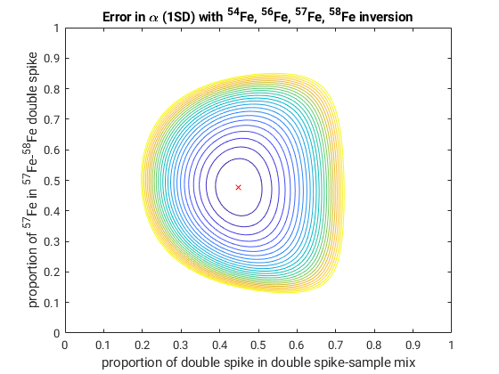
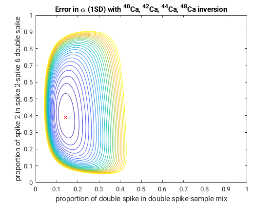
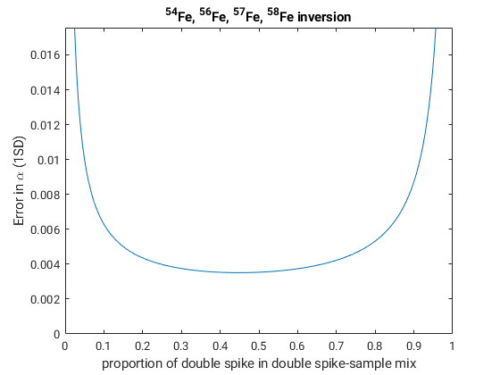
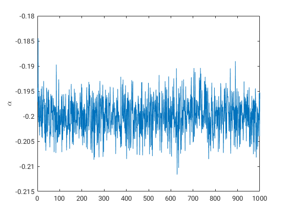

A brief demonstration of the double spike toolbox
This is a quick guide to the main features of the double spike toolbox.
Contents
- Startup
- Default values
- 2D Error surfaces 1
- 2D Error surfaces 2
- 2D Error surfaces 3
- Error curves 1
- Error curves 2
- Optimal spikes 1
- Optimal spikes 2
- Optimal spikes 3
- Optimal spikes 4
- Optimal spikes 5
- Optimal error curves 1
- Optimal error curves 2
- Monte Carlo fake mass spec runs
- Double spike inversions
- Error estimates
- Error model 1
- Error model 2
- Error model 3
Startup
The function dsstartup is used to initialise a number of parameters to default values. These are stored in a global variable called ISODATA. This is a structure with fieldnames corresponding to the different elements. Information includes the isotope numbers, the atomic masses, the standard compositions, and the default error model coefficients. Some of these values are loaded in from the file 'maininput.csv' which can modified by the user as necessary. dsstartup is called automatically the first time one of the double spike toolbox functions is used. The information stored about Fe is shown below.
dsstartup;
global ISODATA;
ISODATA.Fe
Welcome to the double spike toolbox. John F. Rudge 2009-2022.
Default parameters are stored in the global variable ISODATA.
Type "global ISODATA" to access and set these parameters.
ans =
struct with fields:
isonum: [54 56 57 58]
mass: [53.9396 55.9349 56.9354 57.9333]
standard: [0.0585 0.9175 0.0212 0.0028]
rawspike: [4x4 double]
isoname: {'Fe54' 'Fe56' 'Fe57' 'Fe58'}
isolabel: {'^{54}Fe' '^{56}Fe' '^{57}Fe' '^{58}Fe'}
element: 'Fe'
isoindex: [1x58 double]
revisoindex: [1x58 double]
nisos: 4
nratios: 3
nspikes: 4
rawspikelabel: {'spike 1' 'spike 2' 'spike 3' 'spike 4'}
errormodel: [1x1 struct]
Default values
The default values can be accessed and set through the ISODATA global variable. For example, shown below for Fe are the isotope numbers, standard value, the atomic masses, and the third and fourth Oak Ridge National Labs (ORNL) spike compositions (corresponding to the 57Fe and 58Fe spikes). Note that all values are expressed as proportions of each isotope, rather than as isotopic ratios.
ISODATA.Fe.isonum ISODATA.Fe.standard ISODATA.Fe.mass ISODATA.Fe.rawspike(3,:) ISODATA.Fe.rawspike(4,:)
ans =
54 56 57 58
ans =
0.0585 0.9175 0.0212 0.0028
ans =
53.9396 55.9349 56.9354 57.9333
ans =
0.0010 0.0697 0.9288 0.0005
ans =
0.0039 0.1378 0.0125 0.8458
2D Error surfaces 1
The function errorcurve2d plots a 2D error surface as a contour plot, showing how the error varies with both double spike to sample mixture proportions and the proportions in which the two single spikes are mixed to make the double spike. The example below is for a 57Fe-58Fe double spike, using pure spikes.
figure(1); errorcurve2d('Fe','pure',[57 58]);
2D Error surfaces 2
Calculations can also be performed using real spikes rather than hypothetical pure spikes. Below is an example using the third and fourth ORNL spikes (corresponding to 57Fe and 58Fe spikes). This produces Figure 2 in the manuscript. Spike purity usually has only a little effect.
figure(2); errorcurve2d('Fe','real',[3 4]);
2D Error surfaces 3
Some isotopes have more than four isotopes, and in these cases the isotopes to use in the inversion must be specified. Here is an example for Ca, with a 42Ca-48Ca double spike and 40Ca, 42Ca, 44Ca, 48Ca used in inversion. The second and sixth ORNL spikes are the 42Ca and 48Ca spikes. This produces Figure 5 in the manuscript.
figure(3); ISODATA.Ca.rawspike(2,:) ISODATA.Ca.rawspike(6,:) errorcurve2d('Ca','real',[2 6],[40 42 44 48])
ans =
0.0488 0.9448 0.0007 0.0055 0.0001 0.0001
ans =
0.0210 0.0002 0.0001 0.0007 0.0001 0.9778
 Error curves 1
The function errorcurve plots the error in either the fractionation factor alpha or a chosen ratio as a function of the double spike to sample proportion. Note again that all compositions are specified by proportions of each isotope rather than by ratios. Here we look at the error curve for a double spike which is 50% 57Fe and 50% 58Fe.
figure(4); spike=[0 0 0.5 0.5]; % define a spike composition as 50% 57Fe and 50% 58Fe errorcurve('Fe',spike);
Error curves 2
The function errorcurve2 plots the error in either the fractionation factor alpha or a chosen ratio as a function of the proportion of the two single spikes that make the double spike. The proportion in which double spike and sample are mixed must be specified, as must the single spikes to use. We give an example here for a pure 57Fe-58Fe double spike with 50% double spike to 50% sample
figure(5); errorcurve2('Fe','pure',0.5,[57 58])
Optimal spikes 1
The function optimalspike finds double spike compositions which minimise the error on alpha or a chosen ratio. This can be done either for pure spikes, or with the real spikes available from Oak Ridge National Labs. The following example finds the best 57Fe-58Fe spike using the real spikes available from ORNL. The 3rd and 4th spikes correspond to the 57Fe and 58Fe spikes. The optimal double spike turns out to be quite close to a 50-50 mix of the available spikes (optspikeprop). The actual double spike compositions are in optspike, the optimal double spike-sample mixing proportions in optprop, the error estimates in opterr, rescaled error estimates in optppmperamu, and the isotopes that were used in the inversion in optisoinv.
[optspike,optprop,opterr,optisoinv,optspikeprop,optppmperamu]=optimalspike('Fe','real',[3 4])
optspike =
0.0025 0.1059 0.4413 0.4502
optprop =
0.4574
opterr =
0.0036
optisoinv =
54 56 57 58
optspikeprop =
0 0 0.4680 0.5320
optppmperamu =
64.8550
Optimal spikes 2
If the isotopes to spike are not specified, the optimalspike function checks all possible combinations. An example for Fe pure spikes is shown below. This produces Table 1 in the manuscript.
[optspike,optprop,opterr,optisoinv,optspikeprop,optppmperamu]=optimalspike('Fe','pure')
optspike =
0 0.7728 0 0.2272
0 0 0.4765 0.5235
0 0.7531 0.2469 0
0.7996 0 0 0.2004
0.4487 0.5513 0 0
0.7023 0 0.2977 0
optprop =
0.5540
0.4486
0.6916
0.2148
0.3982
0.2306
opterr =
0.0032
0.0035
0.0045
0.0093
0.0109
0.0263
optisoinv =
54 56 57 58
54 56 57 58
54 56 57 58
54 56 57 58
54 56 57 58
54 56 57 58
optspikeprop =
0 0.7728 0 0.2272
0 0 0.4765 0.5235
0 0.7531 0.2469 0
0.7996 0 0 0.2004
0.4487 0.5513 0 0
0.7023 0 0.2977 0
optppmperamu =
57.1338
62.4727
80.1060
165.5689
193.3196
468.5264
Optimal spikes 3
An example for Fe ORNL spikes is shown below. This produces Table 2 in the manuscript.
[optspike,optprop,opterr,optisoinv,optspikeprop,optppmperamu]=optimalspike('Fe','real')
optspike =
0.0015 0.7957 0.0033 0.1996
0.0025 0.1059 0.4413 0.4502
0.0008 0.7654 0.2337 0.0002
0.7863 0.0401 0.0031 0.1704
0.4293 0.5701 0.0005 0.0001
0.6906 0.0317 0.2775 0.0002
optprop =
0.5586
0.4574
0.6961
0.2121
0.4014
0.2328
opterr =
0.0033
0.0036
0.0046
0.0095
0.0111
0.0267
optisoinv =
54 56 57 58
54 56 57 58
54 56 57 58
54 56 57 58
54 56 57 58
54 56 57 58
optspikeprop =
0 0.7641 0 0.2359
0 0 0.4680 0.5320
0 0.7487 0.2513 0
0.7986 0 0 0.2014
0.4360 0.5640 0 0
0.7017 0 0.2983 0
optppmperamu =
59.0686
64.8550
82.5825
169.1806
196.6900
475.5390
Optimal spikes 4
By default, optimalspike minimises the error on alpha, but for radiogenic work we often wish to minimise the error on a particular ratio. An example of this is Pb. Shown below is the result of minimising the error on 206Pb/204Pb. This produces part of Table 3 in the manuscript.
[optspike,optprop,opterr,optisoinv,optspikeprop]=optimalspike('Pb','pure',[],[],[206 204])
optspike =
0.6344 0 0.3656 0
0.7290 0.2710 0 0
0 0.7183 0.2817 0
0.2219 0 0 0.7781
0 0 0.1093 0.8907
0 0.3768 0 0.6232
optprop =
0.5124
0.5073
0.5274
0.5629
0.6150
0.5337
opterr =
0.0031
0.0032
0.0034
0.0045
0.0048
0.0056
optisoinv =
204 206 207 208
204 206 207 208
204 206 207 208
204 206 207 208
204 206 207 208
204 206 207 208
optspikeprop =
0.6344 0 0.3656 0
0.7290 0.2710 0 0
0 0.7183 0.2817 0
0.2219 0 0 0.7781
0 0 0.1093 0.8907
0 0.3768 0 0.6232
Optimal spikes 5
For elements with more than four isotopes, such as Ca, optimalspike tries all combinations of four isotopes in the inversion. This produces Table 4 in the manuscript. We only display the first 31 rows of the optimal spike composition.
[optspike,optprop,opterr,optisoinv,optspikeprop,optppmperamu]=optimalspike('Ca','pure'); optspike(1:31,:)
ans =
0 0.3964 0 0 0 0.6036
0 0.4642 0 0 0.5358 0
0 0 0.4353 0 0 0.5647
0 0 0.4898 0 0.5102 0
0 0 0 0.1605 0 0.8395
0 0 0 0.1550 0 0.8450
0 0 0 0.1545 0 0.8455
0 0 0 0 0.4725 0.5275
0 0 0 0.2298 0.7702 0
0 0 0 0.2238 0.7762 0
0 0 0 0.2162 0.7838 0
0 0.4827 0.5173 0 0 0
0 0.2126 0 0 0.7874 0
0 0 0.3766 0 0.6234 0
0 0.2933 0.7067 0 0 0
0 0.0741 0 0.9259 0 0
0 0 0.3098 0 0.6902 0
0 0 0 0.4462 0.5538 0
0 0.1221 0 0 0.8779 0
0 0 0.1190 0 0 0.8810
0 0.0429 0 0 0 0.9571
0 0.0375 0 0 0 0.9625
0 0 0.4774 0 0.5226 0
0 0 0.5363 0 0.4637 0
0 0 0 0 0.3084 0.6916
0 0 0.3493 0 0 0.6507
0 0 0 0.1584 0 0.8416
0 0 0 0.1605 0 0.8395
0 0 0 0.3211 0.6789 0
0 0 0 0 0.3514 0.6486
0 0 0.1725 0.8275 0 0
Optimal error curves 1
The function errorcurveoptimalspike calculates the optimalspike, and then plots the errorcurve.
figure(6); errorcurveoptimalspike('Fe','real',[3 4]);
Optimal error curves 2
If the isotopes to spike are not specified, all possible combinations are shown. This produces Figure 3 in the manuscript.
figure(7); errorcurveoptimalspike('Fe','real');
Monte Carlo fake mass spec runs
monterun performs Monte Carlo fake mass spec runs. The example below uses a 50-50 spike-sample mix, the pure 50-50 57Fe-58Fe spike used earlier, a natural fractionation of -0.2, an instrumental fractionation of 1.8, with 1000 Monte Carlo samples. The first 10 mixture measurements are shown.
measured=monterun('Fe',0.5,spike,-0.2,1.8,1000);
measured(1:10,:)
ans =
0.2658 4.4861 2.6302 2.6180
0.2658 4.4858 2.6303 2.6180
0.2658 4.4862 2.6302 2.6182
0.2658 4.4860 2.6304 2.6179
0.2657 4.4861 2.6304 2.6180
0.2658 4.4859 2.6304 2.6181
0.2658 4.4861 2.6304 2.6179
0.2658 4.4859 2.6304 2.6179
0.2657 4.4859 2.6301 2.6180
0.2658 4.4859 2.6304 2.6178
Double spike inversions
dsinversion performs the double spike inversion. Here we run the double spike inversion on the Monte-Carlo generated data with the chosen spike. We then produce a figure showing how the value of alpha varies over the run.
out=dsinversion('Fe',measured,spike); figure(8); plot(out.alpha); ylabel('\alpha');
Error estimates
The errorestimate routine estimates the errors by linear error propagation. Here we compare the error got from the Monte-Carlo simulation with that predicted by linear error propagation. The fact that these are close is a good validation of the linear error propagation method.
monteerror=std(out.alpha)
predictederror=errorestimate('Fe',0.5,spike,[],[],-0.2,1.8)
monteerror =
0.0036
predictederror =
0.0036
Error model 1
The coefficients of the error model are in contained in the global variable ISODATA. The coefficients can be specified for the measured, standard (unspiked run), and double spike compositions. See Appendix C of the manuscript for their definition.
ISODATA.Fe.errormodel ISODATA.Fe.errormodel.measured
ans =
struct with fields:
measured: [1x1 struct]
spike: [1x1 struct]
standard: [1x1 struct]
ans =
struct with fields:
type: 'fixed-total'
intensity: 10
a: [2.0710e-10 2.0710e-10 2.0710e-10 2.0710e-10]
b: [2.0027e-09 2.0027e-09 2.0027e-09 2.0027e-09]
c: [0 0 0 0]
Error model 2
The function seterrormodel can be used to simply change the intensity and integration time for the default error model. In the example below, a doubling of the intensity decreases the error by roughly a factor of 1/sqrt(2).
error1=errorestimate('Fe',0.5,spike,[],[],-0.2,1.8) seterrormodel('Fe',20,8); % set a 20 V total beam with 8 second integrations error2=errorestimate('Fe',0.5,spike,[],[],-0.2,1.8) error2/error1 seterrormodel('Fe'); % return error model to defaults
error1 =
0.0036
error2 =
0.0025
ans =
0.6757
Error model 3
The default error model of the double spike toolbox fixes the total voltage of the beams for the overall mixture at a given level. When sample-limited it may be more appropriate to consider an error model where the voltage for the sample is fixed (see John 2012, J. Anal. At. Spectrom.). In the toolbox this can be achieved by changing the error model type from 'fixed-total' to 'fixed-sample'. The code below recreates Figure 8 of Klaver and Coath 2019, Geostandards and Geoanalytical Research.
isoinv = [58 60 61 62]; spike6062 = [0.0132 0.3295 0.0014 0.6547 0.0012]; spike6162 = [0.0109 0.0081 0.4496 0.5297 0.0017]; seterrormodel('Ni') % fix the sample intensity at 0.5 V for all runs ISODATA.Ni.errormodel.measured.intensity = 0.5; ISODATA.Ni.errormodel.measured.type = 'fixed-sample'; figure(9); errorcurve('Ni', spike6062, isoinv); hold on errorcurve('Ni', spike6162, isoinv); ylim([0 0.06]); legend('^{60}Ni-^{62}Ni spike', '^{61}Ni-^{62}Ni spike') seterrormodel('Ni'); % return error model to defaults